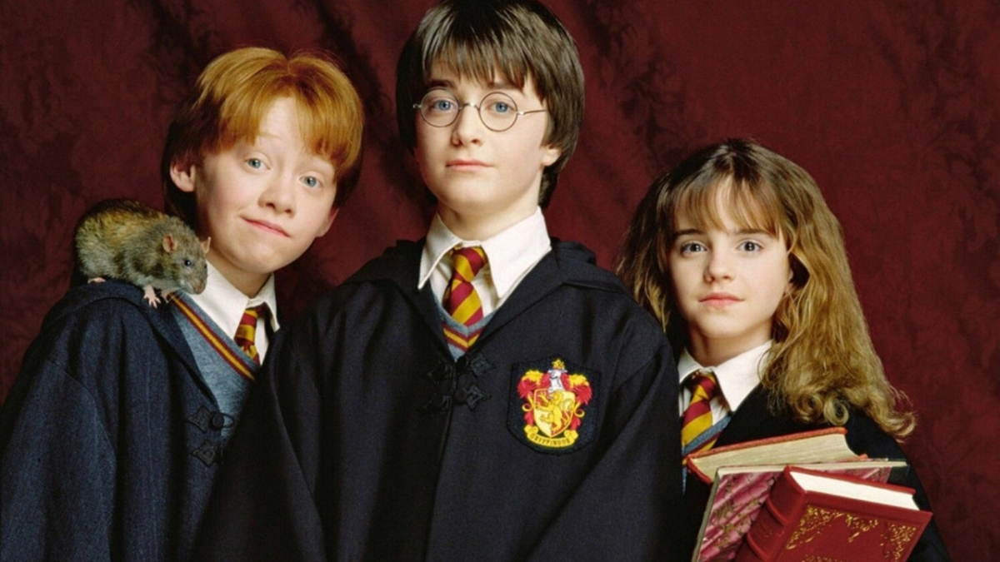
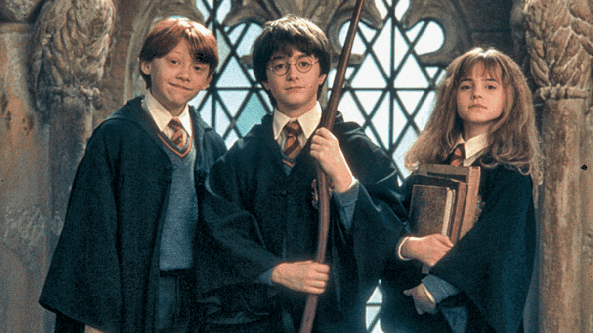

A narrativa que inicia a saga Harry Potter conta a história de um menino bruxo que fica órfão, depois que o vilão Voldemort assassina seus pais a sangue frio. O garoto se torna uma lenda no mundo mágico por ter sobrevivido ao feitiço mortal apenas com uma cicatriz na testa mesmo sendo apenas um bebê.
J. K. Rowling, a criadora da saga Harry Potter conta que a ideia de Harry Potter surgiu em 1990 em uma viagem de trem de Manchester à Londres (cuja estação de destino era King's Cross!). O detalhe era que a autora não tinha nenhum papel em mãos e precisou pensar sobre a ideia a viagem inteira, até chegar em Londres e conseguir escrever tudo.
A saga começou com “A Pedra Filosofal”, primeiro livro lançado por J.K. Rowling em 1997, e chegou às telonas em 2001.Ao longo dos anos, a trajetória do jovem Harry na Escola de Magia e Bruxaria de Hogwarts foi contada em sete livros.
Esta é a segunda maior franquia de todos os tempos, amada por milhões de fãs em todo mundo, mas embora já tenha sido indicado para 12 Oscars, em 8 filmes, a série Harry Potter jamais ganhou um.A elegância de um e a extravagância do outro derrotam Harry Potter. O prêmio de melhores efeitos visuais de 2011 foi um dos mais fáceis de perder.
Os oito filmes baseados na série geraram um retorno de US$ 7,7 bilhões, de acordo com o Box Office Mojo. De todos, o que mais arrecadou foi o último, "Harry Potter e as Relíquias da Morte: Parte 2", que embolsou US$ 1,332 bilhão.A Pedra Filosofal, de Chris Columbus, se tornou a maior bilheteria de Harry Potter em todo o mundo em 2001, mas foi ultrapassada por Relíquias da Morte: Parte 1 e logo depois pela Parte 2, ambas de David Yates. Prisioneiro de Azkaban, de Alfonso Cuarón, foi o filme que menos arrecadou. Ref.
Assim, boa parte da fortuna de Harry é dinheiro antigo, que vem sendo acumulado desde a era dos Peverell. Além disso, o avô paterno de Harry, Fleamont Potter, teria ficado ainda mais rico inventando a Poção para Cabelo Sleekeazy. Harry se depara com sua herança em sua primeira ida ao Banco Gringotes.
